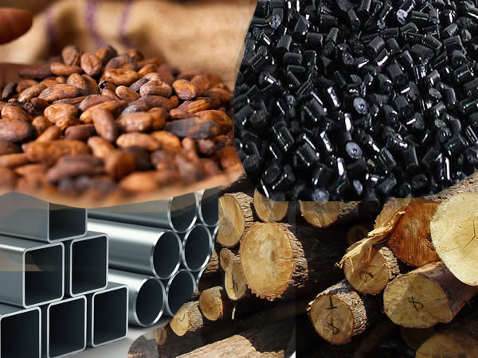

About Khairun-Nas
Welcome to Khairun-Nas, where innovation meets excellence in harnessing and processing solid minerals and Nigeria's rich agricultural raw materials.
Our Mission
At Khairun-Nas, we are committed to driving sustainable development through the responsible utilization of solid minerals and the abundance of agricultural raw materials that Nigeria has to offer. Our mission is to contribute to the growth of the nation's economy while ensuring environmental stewardship and social responsibility.
Together Towards Prosperity
Khairun-Nas is not just a company; we are a part of the Nigerian story. We are committed to working hand in hand with local communities, government agencies, and stakeholders to build a sustainable and prosperous future for all. Join us in this journey towards empowerment, enrichment, and shared success.
What We Do
Harnessing Solid Minerals
Our expertise lies in the harnessing and processing of solid minerals. From exploration to extraction, our dedicated team employs cutting-edge technologies and best practices to unlock the potential of these valuable resources. We strive to maximize efficiency while minimizing the environmental impact of our operations.
Processing Nigeria's Agricultural Raw Materials
Nigeria boasts a wealth of agricultural raw materials, and at Khairun-Nas, we take pride in transforming these resources into high-quality products. Our state-of-the-art processing facilities ensure that we meet the highest standards in quality and safety. From farm to table, we are dedicated to delivering products that nourish and enrich lives.
Our Values
- Integrity: We conduct our business with the utmost integrity, upholding honesty and transparency in all our dealings.
- Innovation: Embracing innovation is at the core of what we do. We constantly seek new and efficient ways to harness and process resources.
- Sustainability: Environmental responsibility is a key consideration in our operations. We are committed to sustainable practices that preserve the planet for future generations.
- Community Engagement: At Khairun-Nas, we understand that our success is intertwined with the well-being of the communities we operate in, especially here in Nigeria. Our commitment to community engagement goes beyond business it's about making a positive impact on the lives of the people who call Nigeria home.We believe in actively engaging with the communities in which we operate. By fostering positive relationships, we contribute to the social and economic development of these areas.